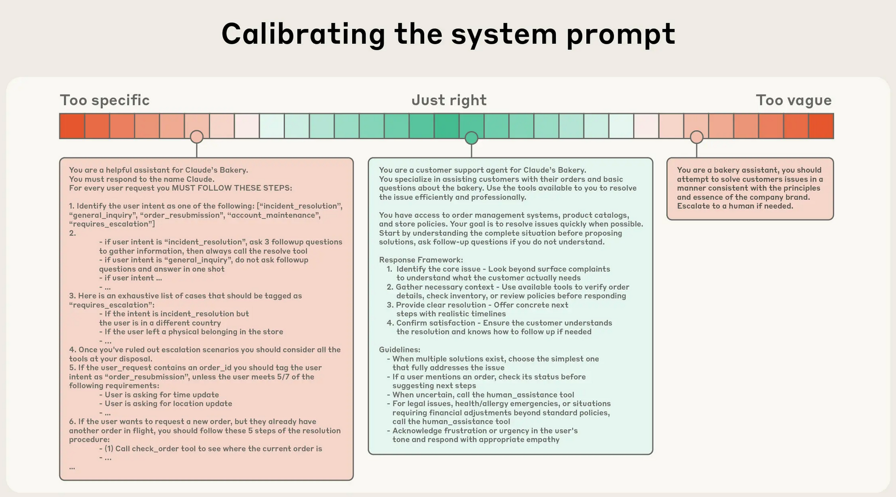
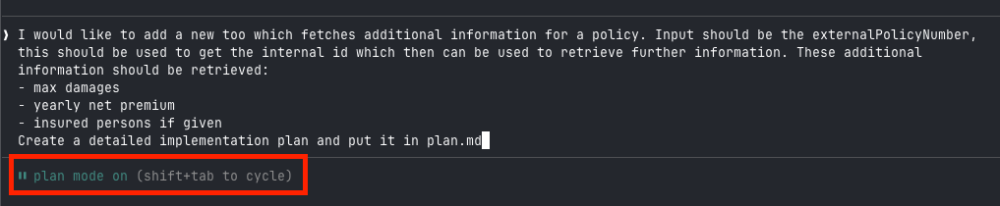
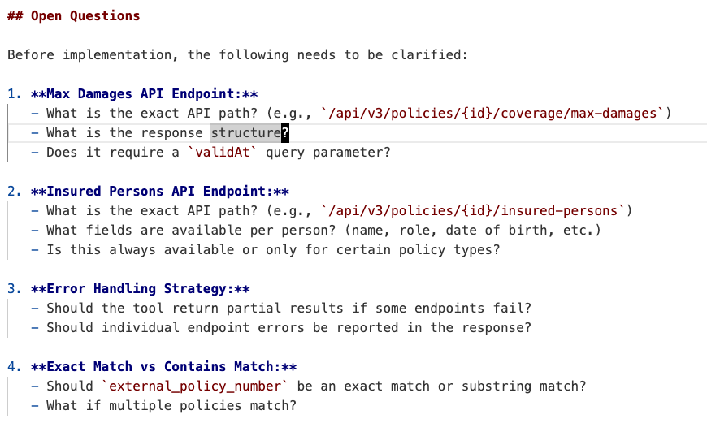
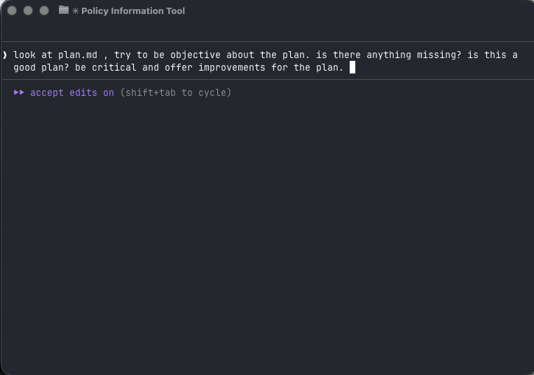
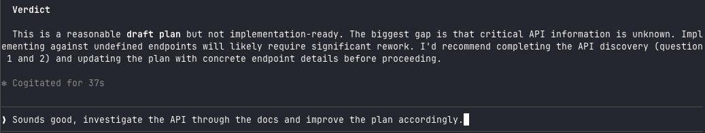

Drehbuch für die Kursleitung
Plan-Modus
Teil IV · Agentisch arbeiten · Dauer gesamt: ca. 50 Min. · Braucht: CLAUDE.md, Git · Führt zu: HTML & JavaScript, Recherche & Prüfen, Mehrere Agenten
Material: Prompt-Formel [CW] S. 16, Planen mit Screenshots [CC] 16–21, Vertrauens-Tabelle und 70/30-Regel [CW] S. 8–9
Abschnitte:
- 4.1 Vom Prompt zur Spezifikation · ca. 10 Min.
- 4.2 Erst planen, dann bauen · ca. 10 Min.
- 4.3 Gemeinsam am Plan arbeiten · ca. 10 Min.
- 4.4 Den Agenten ausführen lassen · ca. 10 Min.
- 4.5 Prüfen und iterieren · ca. 10 Min.
4.1 Vom Prompt zur Spezifikation
Dauer: ca. 10 Min.
Worum geht's
Ein vager Wunsch führt zu einem vagen Ergebnis. Je klarer du vorher sagst, wann die Aufgabe fertig ist, desto besser wird das Ergebnis, und desto leichter kannst du es prüfen. Eine Spezifikation ist nur ein kurzer Text mit Ziel, Rahmen, Ergebnis und „fertig, wenn …“.
Lernziel
Nach diesem Thema können die Teilnehmenden …
- einen vagen Wunsch in eine Spezifikation mit fünf Bestandteilen umschreiben,
- ein prüfbares „Fertig, wenn“ formulieren,
- erklären, warum „nicht zu genau, nicht zu vage“ die Mitte ist.
So erklären wir es
Kreislauf zeigen (Folie/Tafel): Idee → Spezifikation → Plan → Ausführen → Prüfen → zurück. Das ist der rote Faden von Teil IV. Optional das Flyer-Motiv:

Das ist unser Weg für den Rest des Blocks: Idee, Planung, Umsetzung, Ergebnis. Heute schauen wir uns den ersten Schritt an, aus der Idee eine klare Aufgabe machen.
Alltags-Bild: Briefing für eine freie Autorin. Wer „Schreib was über Skifahren“ sagt, bekommt irgendwas. Wer Länge, Zielgruppe, Ton und Abgabetermin nennt, bekommt etwas Brauchbares.
Stell dir vor, du briefst eine gute Freelancerin, die dich nicht kennt. Was müsste sie wissen, damit sie nicht dreimal nachfragen muss? Genau das gehört in die Spezifikation.
Vorher/Nachher an einem Beispiel. Vage: „Plan mir einen Segeltörn.“ Die Spezifikation dazu an der Tafel gemeinsam entwickeln (Gruppe ruft Punkte zu):
# Spezifikation: Segeltörn Kroatien **Ziel:** Eine Woche Törn für 4 Personen, Start und Ziel Split. **Grundlage:** Alles in `quellen/hafenhandbuch/` und `quellen/wetter/`. **Rahmen:** Max. 4 Stunden Segeln pro Tag, jede Nacht in einem Hafen oder einer Bucht, Budget 600 € pro Person. **Ergebnis:** `toern.md` mit Tagesplan (Route, Distanz, Hafen) und einer Crew-Checkliste. **Fertig, wenn:** Jede Tagesetappe unter 25 Seemeilen liegt, jeder Hafen im Hafenhandbuch vorkommt und die Gesamtkosten dokumentiert sind.Die fünf Bausteine benennen: Ziel, Grundlage, Rahmen, Ergebnis, Fertig-wenn. Das „Fertig, wenn“ ist das Wichtigste, denn damit prüfen wir später in 4.5.
Prompt-Formel als Gedächtnisstütze (aus [CW] S. 16): Rolle, Kontext, Aufgabe, Rahmen, Beispiele. Die Beispiele werden am häufigsten weggelassen und wirken am stärksten („so soll ein Tagesplan aussehen“).
Nicht zu genau, nicht zu vage. Zu viele Vorgaben engen ein oder widersprechen sich, zu wenige lassen Claude raten:

Die Grafik ist von Anthropic und auf Englisch, die Idee gilt für jeden Text: Sag, was dir wichtig ist, und lass den Rest offen.
Brücke: Wer nicht weiß, was in die Spezifikation gehört, muss sie nicht allein schreiben. In 4.7 lassen wir uns von Claude ausfragen.
Zeigen (Live-Demo)
Gleicher Wunsch, zwei Mal, jeweils in einer frischen Session (/clear dazwischen). Wir lassen vorerst nur Text erzeugen, nichts bauen.
Plan mir einen Segeltörn.
Lies die Spezifikation in spezifikation.md und erstelle daraus toern.md.
Vorher spezifikation.md mit dem Beispiel oben anlegen (vorbereiten). Worauf wir hinweisen: Das erste Ergebnis ist generisch und passt zu niemandem. Das zweite lässt sich Punkt für Punkt gegen „Fertig, wenn“ prüfen.
Selbst machen (Übung)
Jede:r nimmt einen eigenen Wunsch (Lernplan, Bergtour, WG-Budget, Skitrip) und schreibt die Spezifikation in eine Datei spezifikation.md, mit den fünf Bausteinen. Wer hängt, bittet Claude: „Hier ist mein Wunsch: … Stell mir die Fragen, die du für eine Spezifikation brauchst.“
Geklappt, wenn: Das „Fertig, wenn“ lässt sich mit Ja/Nein beantworten (nicht „soll gut sein“, sondern „jedes Kapitel kommt vor“). Die Dateien bleiben liegen, wir brauchen sie in 4.2.
Stolpersteine & Fragen
- „Das ist doch viel Aufwand für einen Prompt.“ Für Kleinkram stimmt das. Bei größeren Aufgaben spart die Minute Nachdenken mehrere Korrekturrunden.
- Zu lange Spezifikationen. Eine halbe Seite reicht. Lieber Beispiele als Regeln.
- „Fertig, wenn“ nicht prüfbar („schön“, „übersichtlich“). Nachfragen: Woran würdest du das merken?
- Wo liegt die Datei? Im Projektordner, damit Claude sie lesen kann. Dauerhafte Regeln gehören in die
CLAUDE.md(3.4), die Spezifikation gilt nur für diese Aufgabe.
Material & Quellen
- Handout: Schüler-Seite, Abschnitt 1
- Kollegen-Folien: [CC] Folie 2 (Ablauf), [CC] 11 / [OC] 12 (Prompt kalibrieren), [CW] S. 16 (Prompt-Formel), siehe material.md
- Beispielprojekt: beispielprojekte.md (Segeltörn-Planer)
Stand: 2026-11-06
4.2 Erst planen, dann bauen
Dauer: ca. 10 Min.
Worum geht's
Im Plan-Modus liest Claude und denkt nach, ändert aber nichts. Erst wenn der Plan stimmt, wird gebaut. Das ist billiger als Reparieren.
Lernziel
Nach diesem Thema können die Teilnehmenden …
- den Plan-Modus mit
/planoderShift + Tabeinschalten, - erklären, warum Planen vor dem Bauen Zeit spart,
- Claude einen Plan als
plan.mdspeichern lassen.
So erklären wir es
Bild: Architektin und Bagger. Niemand fängt ein Haus mit dem Bagger an. Erst Plan, dann Baugenehmigung, dann Bagger.
Ohne Plan-Modus ist Claude der Bagger mit Vollgas. Mit Plan-Modus ist es die Architektin, die nur zeichnet.
Zweites Bild aus unseren Domänen: Bergtour. Nach dem Aufbruch merkt man am Grat, dass die Route zu lang war. Vorher auf der Karte war das Umplanen gratis.
Was der Plan-Modus macht: Claude liest Dateien, erkundet, stellt Rückfragen und schlägt einen Plan vor. Es ändert nichts, bis du den Plan freigibst ([KB] 05, §Plan before you edit; Stand 2026-11). Berechtigungen: siehe 1.7.
Einschalten: Am einfachsten tippst du
/planund gleich die Aufgabe dahinter, z. B./plan Plane den Törn ab Split. OderShift + Tabdrücken, bis unten „plan mode on“ steht. Seit Claude Code v2.1.283 startet jede Session im Auto-Modus. Von dort sind es drei Drücke: Manual, Änderungen annehmen, Plan. Unter Windows kann stattShift + TabauchAlt + Mnötig sein ([KB] 25, §Modes). Auf dem Bild unten rot umrandet:
Das Beispiel ist ein Entwickler-Beispiel (Versicherung). Wir zeigen es live mit unserem eigenen Beispiel, dem Segeltörn.
Der Prompt darf einfach sein. Wichtig ist, dass der Plan in einer Datei landet (
plan.md), denn die können wir lesen und bearbeiten (4.3). MitCtrl + Göffnest du den Plan direkt im Editor.Freigabe: Ist der Plan fertig, fragt Claude. Du wählst „Ja, und Auto-Modus“, „Ja, Änderungen einzeln bestätigen“ oder „Nein, weiter planen“ ([KB] 05; im Programm auf Englisch, Stand 2026-11). Für uns jetzt: „Nein, weiter planen“.
Zeigen (Live-Demo)
Segeltörn-Projekt mit spezifikation.md aus 4.1. /plan (oder Shift + Tab bis „plan mode on“), dann:
Lies spezifikation.md und die Dokumente in quellen/. Erstelle einen detaillierten Umsetzungsplan und schreib ihn in plan.md.
Worauf wir hinweisen: Claude liest Dateien, ändert aber nichts am Projekt. Er stellt eventuell Rückfragen. Plan-Modus ist am Ende noch an: nach dem Plan fragt Claude, wie es weitergeht (siehe Freigabe oben). Wir wählen noch nicht eine der Ja-Optionen, sondern wechseln zu 4.3.
Laut [KB] 05 ändert der Plan-Modus nichts bis zur Freigabe. Ob Claude plan.md im Projektordner dabei schon direkt schreibt, steht dort nicht. Vor dem Workshop prüfen. Sonst hilft: Plan im Chat zeigen lassen, mit Ctrl + G ansehen oder nach der Freigabe speichern lassen. Notfalls: „Zeig mir den Plan hier im Chat“ und anschließend im normalen Modus speichern lassen.
Selbst machen (Übung)
Alle schalten den Plan-Modus ein und lassen einen Plan für ihre Spezifikation aus 4.1 erzeugen:
Lies spezifikation.md. Erstelle einen detaillierten Umsetzungsplan und schreib ihn in plan.md.
Geklappt, wenn: plan.md existiert (in der Dateiliste von VS Code sichtbar) und im Projekt sonst nichts verändert wurde. Wer will, prüft das mit git status (2.8).
Stolpersteine & Fragen
- „Ich sehe kein ‚plan mode‘.“ Aus dem Auto-Modus sind es drei Drücke von
Shift + Tab. Einfacher:/plan <Aufgabe>tippen. Unter Windows ggf.Alt + M, siehe oben. - Claude baut trotzdem los. Dann war der Plan-Modus nicht an (die Session startet im Auto-Modus!). Abbrechen (Esc) und Modus prüfen, ggf. mit Git zurückholen (2.6).
- „Brauche ich das immer?“ Nein. Für kleine, klare Aufgaben (Tippfehler, Umbenennen) reicht ein Prompt. Planen lohnt, wenn mehrere Dateien oder mehrere Schritte betroffen sind.
- Der Plan ist zu lang. Gut so, dann ist 4.3 wichtig: kürzen, streichen, nachfragen.
Material & Quellen
- Handout: Schüler-Seite, Abschnitt 2
- Kollegen-Folien: [CC] Folie 16 – Plan-Modus mit einfachem Prompt, siehe material.md
- Wissensbasis: [KB] 05 (§Plan before you edit), [KB] 25 (§Modes)
- Offizielle Doku: Plan-Modus und Modi in Claude Code (code.claude.com/docs)
Stand: 2026-11-12
4.3 Gemeinsam am Plan arbeiten
Dauer: ca. 10 Min.
Worum geht's
Der erste Plan ist ein Entwurf. Lies ihn, beantworte die offenen Fragen direkt in plan.md und lass Claude ihn kritisch prüfen, bevor etwas gebaut wird. Ein Plan in einer Markdown-Datei ist Text, den du wie jeden anderen Text bearbeitest.
Lernziel
Nach diesem Thema können die Teilnehmenden …
- einen Plan lesen und auf Lücken prüfen,
- offene Fragen des Agenten direkt in
plan.mdbeantworten, - Claude bitten, den Plan kritisch zu hinterfragen und Alternativen zu nennen.
So erklären wir es
Bild: Entwurf mit Rotstift. Wie bei einem Aufsatz: Die erste Fassung ist nie die letzte. Du bist Lektorin, Claude schreibt.
Offene Fragen. Claude schreibt von sich aus Fragen in den Plan (Abschnitt „Open Questions“ bzw. „Offene Fragen“). Wir beantworten sie direkt in der Datei, im Editor, unter der jeweiligen Frage:

Das ist ein Entwickler-Beispiel. Bei uns steht dort z. B. „Soll die Route Inseln anlaufen oder an der Küste bleiben?“ Und wir schreiben die Antwort darunter.
Abkürzung: Mit
Ctrl + Göffnet Claude Code den Plan direkt im Editor, noch bevor du ihn freigibst ([KB] 25, [KB] 05). Lieber so ändern als im Chat diskutieren.Dann „sei kritisch“. Nach den Antworten fragen wir Claude nach einem Gegencheck:

Der Agent hat den Plan selbst geschrieben und findet ihn deshalb erst mal gut. Wir bitten ihn ausdrücklich, kritisch zu sein.
Ergebnis und Verbesserung. Typisch ist ein Urteil wie „vernünftiger Entwurf, aber noch nicht umsetzbar“, dann bitten wir um Überarbeitung:

Mehrere Runden sind normal. Zwei bis drei Durchgänge, dann ist der Plan meist gut. Danach nicht endlos weiter feilen.
Alternativen verlangen: „Welche zwei anderen Herangehensweisen gäbe es?“ Das verhindert, dass wir den ersten Einfall nur abnicken.
Wann reichen Fragen in
plan.mdnicht? Wenn die Idee selbst noch unscharf ist, lassen wir uns ausfragen, siehe 4.7 grill-with-docs.
Zeigen (Live-Demo)
Mit dem plan.md aus 4.2: Datei in VS Code öffnen (oder Ctrl + G), die offenen Fragen vorlesen, zwei davon live unter die Frage beantworten, speichern. Dann in Claude Code:
Ich habe die offenen Fragen in plan.md beantwortet. Schau dir den Plan nochmal an und versuch objektiv zu sein: Fehlt etwas? Ist das ein guter Plan? Sei kritisch und schlag Verbesserungen vor.
Welche zwei anderen Herangehensweisen gäbe es? Nenne jeweils Vor- und Nachteile.
Überarbeite plan.md entsprechend: Übernimm die Verbesserung 1 und 3, lass 2 weg.
Worauf wir hinweisen: Wir entscheiden, was in den Plan kommt, Claude liefert Vorschläge. Optional: Plan committen (2.4), dann ist jede Fassung nachvollziehbar.
Selbst machen (Übung)
Eigenes plan.md lesen. Mindestens eine offene Frage in der Datei beantworten, einen Schritt streichen oder ändern, dann den Kritik-Prompt oben verwenden und eine Verbesserung übernehmen.
Geklappt, wenn: Der Plan ist nach der Runde sichtbar anders (Diff in VS Code, 2.3) und du kannst begründen, warum.
Stolpersteine & Fragen
- „Ich verstehe den Plan nicht.“ Nachfragen: „Erklär Schritt 3 in einfachen Worten.“ Was du nicht verstehst, kannst du nicht prüfen.
- Claude stimmt allem zu. Agenten sind höflich. Deshalb ausdrücklich nach Kritik, Lücken und Alternativen fragen.
- Antworten ohne Speichern. Datei speichern, bevor Claude sie liest.
- Wo ist die Grenze? Plan zu detailliert ist auch schlecht: Wenn er jede Zeile vorschreibt, bist du der Programmierer. Er soll Schritte und Prüfkriterien enthalten.
Material & Quellen
- Handout: Schüler-Seite, Abschnitt 3
- Kollegen-Folien: [CC] Folien 18–20 (Fragen in
plan.md, „sei kritisch“), [OC] Folie 23, siehe material.md
Stand: 2026-11-12
4.4 Den Agenten ausführen lassen
Dauer: ca. 10 Min.
Worum geht's
Jetzt wird gebaut. Du gibst den Plan frei und schaust zu, was Claude liest, schreibt und ausführt. Ein Commit vorher ist dein Sicherheitsnetz.
Lernziel
Nach diesem Thema können die Teilnehmenden …
- einen Plan zur Umsetzung freigeben,
- an der Ausgabe erkennen, welche Dateien Claude liest, ändert oder anlegt,
- vor dem Start einen Commit als Rückweg anlegen,
- laufende Arbeit unterbrechen, wenn es in die falsche Richtung geht.
So erklären wir es
- Erst sichern. Vor dem Ausführen committen (2.4), damit wir mit 2.6 zurückkönnen.
Beim Skifahren schnallst du die Ski auch erst an, bevor du die Piste runterfährst. Der Commit ist die Bindung.
- Freigeben. Entweder auf Claudes Frage nach dem Plan zustimmen („Ja, und Auto-Modus“ oder „Ja, Änderungen einzeln bestätigen“, [KB] 05; wer noch lernt, nimmt das zweite) oder schlicht: „Setze
plan.mdum.“ Wer will, startet vorher mit/clear, dann hat Claude einen frischen Kopf und nur den Plan als Gedächtnis (Kontext: 3.6). - Zuschauen ist Teil des Jobs. Wir lesen live mit: Welche Dateien werden gelesen, welche geschrieben, welche Befehle ausgeführt? Bei Rückfragen nach Erlaubnis bewusst entscheiden (1.7).
- Zwischenergebnisse. Bei größeren Plänen nach jedem Schritt kurz hinschauen, nicht erst am Ende. Sinnvoll: „Setze nur Schritt 1 und 2 um, dann halte an.“
- Eingreifen. Geht etwas schief:
Escunterbricht Claude, die bisherige Arbeit bleibt. Dann sagen, was falsch läuft. Nicht warten, bis alles fertig ist. Du kannst auch während Claude arbeitet tippen: Die Korrektur wird eingereiht und gelesen, sobald die laufenden Schritte fertig sind ([KB] 14, §Watch the first minute).- Zweimal korrigiert und es wird nicht besser? Dann
/clearund ein besserer Auftrag statt einer dritten Korrektur ([KB] 14). - Zurückspulen:
Esc Escoder/rewindsetzt Dateien und/oder Gespräch auf einen früheren Stand. Grenze: Was Claude per Befehl im Terminal geändert hat, wird nicht zurückgesetzt ([KB] 25, §Rewind). Dafür bleibt Git das Netz (2.6).
- Zweimal korrigiert und es wird nicht besser? Dann
- Unterwegs committen. Was gut ist, committen. Was schlecht ist, verwerfen.
Zeigen (Live-Demo)
Segeltörn-Plan aus 4.3. Zuerst Commit-Moment:
Mach einen Commit mit der Nachricht „Spezifikation und Plan“.
Dann /clear und Umsetzung in Etappen:
Setze plan.md um, aber nur die Schritte 1 bis 3. Danach halt an und fasse zusammen, was du gemacht hast.
Worauf wir hinweisen: Welche Dateien entstehen? Was fragt Claude um Erlaubnis? Was steht in der Zusammenfassung, und stimmt sie mit dem überein, was wir in VS Code sehen? Den Diff zeigen (2.3).
Selbst machen (Übung)
Eigenen Stand committen.
Claude die ersten Schritte des Plans umsetzen lassen:
Setze plan.md um, Schritt 1 bis 2. Halte danach an und fasse zusammen.Im Diff nachsehen, was sich geändert hat. Dann ggf. weitermachen.
Geklappt, wenn: Du kannst benennen, welche Dateien neu oder geändert sind, und hast einen Commit, zu dem du zurückkehren könntest.
Stolpersteine & Fragen
- Erlaubnis-Abfragen nerven. Einzeln lesen und bewusst bestätigen. „Immer erlauben“ nur für harmlose Dinge (1.7).
- Es dauert lange. Normal. Wir sehen zu und trinken Tee. Hängt es offensichtlich:
Esc. - Claude macht etwas anderes als im Plan. Unterbrechen, auf den Plan verweisen („Das steht so nicht in plan.md“), notfalls zurückrollen.
- Kontext wird voll. Bei langen Sessions nachlassende Qualität: neu starten und
plan.mdlesen lassen (3.6). - Freigabe nach dem Plan-Modus (Stand 2026-11, [KB] 05): drei Optionen, siehe oben. Wer in 1.4 auf Manual gewechselt hat, nimmt „einzeln bestätigen“.
Material & Quellen
- Handout: Schüler-Seite, Abschnitt 4
- Kollegen-Folien: [CC] Folie 2 (Ablauf: Umsetzung), siehe material.md
Stand: 2026-11-12
4.5 Prüfen und iterieren
Dauer: ca. 10 Min.
Worum geht's
Fertig heißt nicht richtig. Prüfe das Ergebnis gegen dein „Fertig, wenn“ und gib konkretes Feedback statt „mach besser“. Claude macht etwa 70 % schnell, die letzten 30 % sind deine.
Lernziel
Nach diesem Thema können die Teilnehmenden …
- ein Ergebnis Punkt für Punkt gegen die Spezifikation prüfen,
- konkretes, umsetzbares Feedback formulieren,
- einschätzen, wo sie Claude eher vertrauen können und wo sie nachprüfen müssen,
- gute Zwischenstände committen.
So erklären wir es
Zurück zum „Fertig, wenn“ aus 4.1. Das ist unsere Checkliste. Beim Segeltörn: Ist jede Etappe unter 25 Seemeilen? Kommt jeder Hafen im Hafenhandbuch vor?
Feedback muss konkret sein. Gegenüberstellung an die Tafel:
Schlecht Besser „Mach das besser.“ „Tag 4 ist zu voll. Verteile auf Tag 4 und 5.“ „Stimmt das?“ „Zeig mir die Quelle für die Distanz Split–Hvar.“ „Zu lang.“ „Kürze jeden Tag auf drei Zeilen.“ Wann kann ich trauen? Dreistufig (nach [CW] S. 9, vor dem Workshop gegenlesen):
- Hohes Vertrauen: Entwürfe, Zusammenfassungen, Umformulieren, Ideen.
- Erst prüfen: Fakten, Zahlen, Daten, Quellen, Rechnungen.
- Wenig Vertrauen: Alles Aktuelle (Preise, Wetter heute), Rechtliches, exakte Berechnungen ohne Gegenprobe.
Claude ist wie ein belesener Autor, keine Datenbank. Was klingt wie ein Fakt, kann trotzdem erfunden sein.
Gegenprobe-Beispiele aus unseren Domänen: Sparplan mit Monats- und Jahreszins gegenrechnen, Wurfwinkel 45 Grad als Test (maximale Weite), Distanz auf der Karte nachmessen. Mehr in beispielprojekte.md (Prüf-Challenge).
Claude beim Prüfen einspannen. „Prüfe dein Ergebnis gegen die Spezifikation und liste jede Abweichung.“ Das ersetzt unser Prüfen nicht, findet aber Offensichtliches.
Committen, wenn gut. Jede brauchbare Fassung ein Commit (2.4). Wird eine Änderung schlechter, geht es zurück (2.6).
Und im Kreis: Feedback führt zur nächsten Runde, bis das „Fertig, wenn“ erfüllt ist. Dann aufhören.
Zeigen (Live-Demo)
Ergebnis aus 4.4. Wir gehen die Fertig-wenn-Punkte am Bildschirm durch. Einen Punkt lassen wir bewusst Claude prüfen:
Prüfe toern.md gegen spezifikation.md. Liste für jeden Punkt unter „Fertig, wenn“ auf, ob er erfüllt ist, mit Beleg.
Dann ein konkretes Korrektur-Beispiel:
Die Etappe an Tag 3 hat 31 Seemeilen. Verteile Tag 3 und 4 so, dass beide unter 25 liegen, und zeig mir die neue Aufteilung, bevor du die Datei änderst.
Worauf wir hinweisen: Wir fragen nach Belegen. Wir prüfen mindestens eine Zahl selbst.
Selbst machen (Übung)
- Eigene Spezifikation öffnen, jeden „Fertig, wenn“-Punkt abhaken oder markieren.
- Zwei konkrete Feedbacks formulieren (je ein Satz) und umsetzen lassen.
- Eine Zahl oder Aussage selbst nachprüfen.
Geklappt, wenn: Mindestens ein Fehler gefunden oder bewusst bestätigt wurde, und der Stand ist committet.
Stolpersteine & Fragen
- „Sieht doch gut aus.“ Schön ist nicht richtig, siehe Prüf-Challenge in Teil V (5.6).
- Endlos weiter verbessern. Das „Fertig, wenn“ ist die Abbruchbedingung.
- Claude „bestätigt“ sich selbst. Selbstprüfung hilft, ersetzt aber nicht die eigene Stichprobe.
- Was, wenn es schlimmer wurde? Zurück zum letzten Commit (2.6).
- Vor dem Workshop prüfen: Vertrauens-Tabelle aus [CW] S. 9 mit aktuellen Erfahrungen abgleichen (Modelle ändern sich).
Material & Quellen
- Handout: Schüler-Seite, Abschnitt 5
- Kollegen-Folien: [CW] S. 8–9 (Vertrauens-Tabelle, 70/30-Regel), [CW] S. 19 (Was Claude nicht kann), siehe material.md
Stand: 2026-11-06